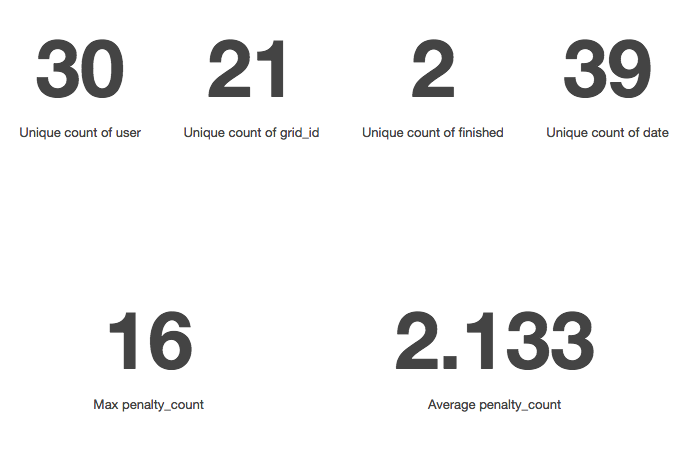
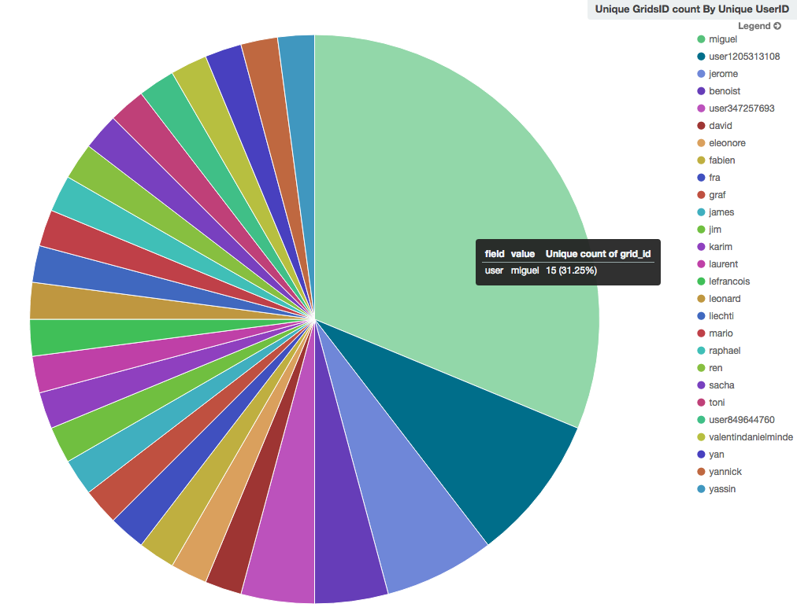

This is a Scala project done at HEIG-VD, Switzerland. It is a stand-alone game about Nonograms using the Scage library with maven.
It was done in Spring 2016 by Eleonore d'Agostino & Valentin Minder.
Please find the run and/or deployment instructions in the README file.
This project is an implementation of the Nonogram game, a type of logic puzzle in which cells in a grid must be determined as either filled or empty, often in order to produce a hidden picture (in which case they are also known as Picross puzzles).
Nonograms have a variant involving several colors, but our implementation is the standard black-and-white version.
There is an example:
(This is somehow redundant - There are the rules written in the game help)
Nonograms are a type of logic puzzle, where the aim is to color the cells in the grid according to the given numbers.
Per example, a line listed as '2 1 3' would consist of:
Examples: --XX-X-XXX, XX--X--XXX, -XX-X-XXX-
There can be any number of leading and trailing spaces.
To finish the game you need to find all filled squares.
The controls are simple:
The goal is to find all filled squares. Empty squares marks are only to help you, you are free not to use them.
When playing a random grid, there might be multiple solutions.
If you are unsure about the accuracy of your guesses, you can use 'Draft Mode' to try filling squares.
Draft mode gives the possibility of cancelling or validating choices once you're ready to return to regular mode.
There is an example of usage, where a user is playing

In the center we can see the current state of the game. In the menu on the left, we can see:
We used the scage library to make our project run. Scage is a framework to write simple 2D OpenGL games, written in Scala. Find out more about Scage.
Scage was very much a mixed bag in terms of how well we were able to use it. On the one hand, having a library that bundled up many java libraries for use in scala, with all the OpenGL code written for us was incredibly practical. On the other, Scage lacks any form of proper documentation, and there were several things we had to code entirely by hand when it could have made sense for the engine to handle at least part of it.
Per example, we coded our own buttons, but had to modify the code several times to understand how to get them to display on a specific screen and not just some random one. ("Random" because we could not figure out how it decided which screen to go on, only that it was not the one we were calling it from.)
Another example is how we handled the name input on the menu screen, where we needed to make a map of keys to... key values (Map(KEY_1 -> "1", KEY_A -> "a") and so on) and then iterate over them to create key bindings, because the any_key function, that triggers an event any time any key is pressed, doesn't pass the key name as parameter.
Our project is structured into a MVC structure. You can see the project structure here.

The core of the program is found in Grid and UserGrid models:
A Grid represent the solution of the Grid. Its main field is a double-array of booleans: either the cell is filled (black) or it's empty (white) and contains the solution. It has no state.
A UserGrid represent the current state of completion of a certain grid. Its main field is a double-array of CellTypes (see below). It allows all the interaction (change the state of a cell, validate or cancel the draft, reset the game, etc.)

A Cell might be of several CellType:

Internally, grid state is a List[List[Boolean]], which means you can directly access element (x,y) with l(x)(y). However, it means that the internal lists are in non-human readable format.
Example:
List(List(1,1), List(0,0))
would be
| -> x
v 10
y 10This format is anti-intuitive at construction time, but very practical for direct random access (x,y). To address this issue constructors of Grid are provided with an option (humanreadable) to allow logical human format as in input. In human-readable format, the input is what you will see on the screen.
When a user is playing, anonymous data are sent on a server on Amazon. It includes the username and the current game state, as it is seen by the user. This allows us to track the usage and do some cool grafics.
Some metrics about usage.

The number of grids played by each username.

Hopefully for the final demo we will have a live leaderboard of competitors. :D
We extensively tested the models and their methods with extended Unit tests. The classes that are targeted especially are Grid and UserGrid. There are 17 tests that cover 100% line coverage of the models.

A single test is a little fake to reach the 100% coverage. To test the clicks, you have to test two clicks (right and left) on all possible states (6), in two modes (strict or not), with or without draft activated. This would be 2 * 2 * 2 * 6 = 48 tests. We decided to tests only a few, and then generate all possible clicks without actually testing anything. This resulted in the last 5% of UserGrid coverage.
The UI is not unit tested. Instead we performed several quality tests ourselves, then made an alpha pre-release one week before the deadline. Many of our class mates tested the product and reported several bug or improvements. Thanks to them! ;)
We reached a state where the accomplishment follows completely the goals of the project. The UI was cleaned and is ready for production.
We developed many options (username, draft mode, strict mode), however the game it still simple and many additional features could be implemented.
Nothing to mention to our knowledge. Most bugs / UI issues were found and fixed during the alpha pre-release. There should be no issues during normal use.
Even if we were a little lost with this framework, especially at first, this was a very interesting project to do. With Scage being very light on documentation, that meant we had the opportunity to experiment a lot and essentially code small engine parts ourselves, as with the buttons.
Choosing a nonogram game as the target also meant we had a very clear goal with easily trackable progress, but while keeping an fairly interesting end result.
As for the end result itself, we're quite happy with it. The game is completely playable, with enough quality-of-life options that it isn't a chore to interact with, and runs smoothly.
Scala is fun/1 :)